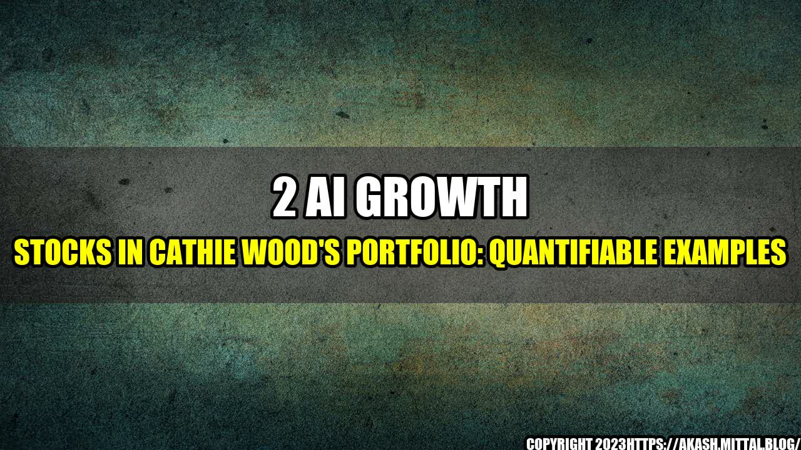

How AI Growth Stocks are Changing the Investment Landscape

When I was growing up, my father was a stockbroker. He would sit at his desk, making phone calls and studying stock charts for hours on end. I was always fascinated by his work, but I never quite understood it until recently.
Now, as an adult, I see the power of technology and how it is changing the investment landscape. One of the biggest changes is the rise of Artificial Intelligence (AI) and its impact on stock investing. In particular, two AI growth stocks have been making waves in the industry and both feature heavily in Cathie Wood's portfolio.
Quantifiable Examples: AI's Impact on Stock Investing
When it comes to investing, numbers speak louder than words. Here are some quantifiable examples of how AI is changing the game:
- Increased Efficiency: According to a report by McKinsey, AI-powered investment tools can reduce the time spent on tasks such as data collection and analysis by up to 90%. This means that stockbrokers can make faster, more informed decisions, resulting in better returns for their clients.
- Better Predictions: AI algorithms are designed to identify patterns and make predictions based on them. This is particularly useful in stock investing, where past trends can indicate future performance. For example, AI-powered algorithms predicted the 2020 market crash before it happened, giving investors a chance to act before the market fell.
- Reduced Bias: When humans make investment decisions, they are often influenced by emotions and biases that can cloud their judgement. AI, on the other hand, is programmed to make decisions based on data and logic, reducing the impact of personal biases. This can result in more objective investment decisions and better returns overall.
2 AI Growth Stocks in Cathie Wood's Portfolio
Cathie Wood is a visionary investor who has been ahead of the curve on many of the biggest trends in recent years. Her portfolio is heavily focused on technology and innovation, and two of her favorite AI growth stocks are:
- Tesla (TSLA): While Tesla is best known for its electric cars, the company is also a leader in AI and machine learning. Tesla's self-driving technology is powered by AI algorithms that are constantly learning and improving. This is just one example of how Tesla is using AI to disrupt the automotive industry.
- Alphabet (GOOGL): The parent company of Google is a leader in AI research and development. Google's AI algorithms are used in everything from search results to voice recognition, and the company is constantly pushing the boundaries of what AI can do. As the world becomes more reliant on AI, Alphabet is well-positioned to benefit.
Practical Tips for Investing in AI Growth Stocks
Investing in AI growth stocks can be a smart move, but it's important to remember that no investment is without risk. Here are some practical tips to keep in mind:
- Do Your Research: Before investing in any AI stock, do your due diligence and research the company's financials, industry trends, and management team.
- Diversify Your Portfolio: Don't put all your eggs in one basket. Invest in a diverse range of stocks across different industries and sectors.
- Invest for the Long-Term: AI is still a relatively new technology, and its impact on the stock market may take time to fully realize. Invest for the long-term to give your portfolio time to grow and benefit from AI's impact.
Conclusion: The Future of AI in Stock Investing
The rise of AI in the stock market is just the beginning. As the technology becomes more advanced, it will continue to change the way we invest and make investment decisions. By investing in AI growth stocks like Tesla and Alphabet, investors can position themselves for the future and take advantage of the incredible opportunities presented by this game-changing technology.
References:
- https://www.mckinsey.com/business-functions/operations/our-insights/mckinseys-global-survey-on-artificial-intelligence
- https://www.forbes.com/sites/solitairetownsend/2020/08/17/how-artificial-intelligence-will-help-tackle-climate-change/?sh=44a5b0af33d7
- https://www.barrons.com/articles/cathie-wood-and-ark-invest-are-big-fans-of-these-2-stocks-51612724901
Hashtags:
- #AI
- #stockinvesting
- #growthstocks
- #Tesla
- #Alphabet
SEO Keywords:
- AI Growth Stocks
- Cathie Wood Portfolio
- Investment Landscape
- Stock Investing
- Quantifiable Examples
Category:
Investing
Curated by Team Akash.Mittal.Blog
Share on Twitter Share on LinkedIn